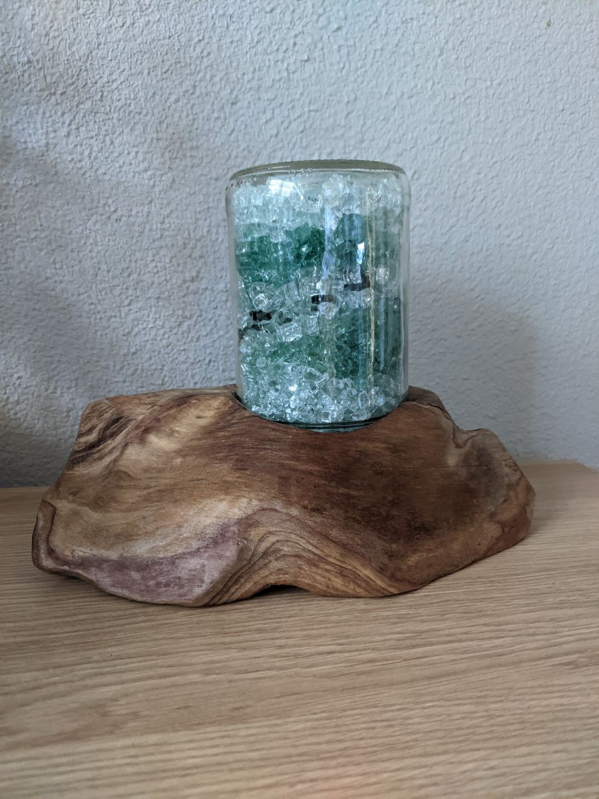
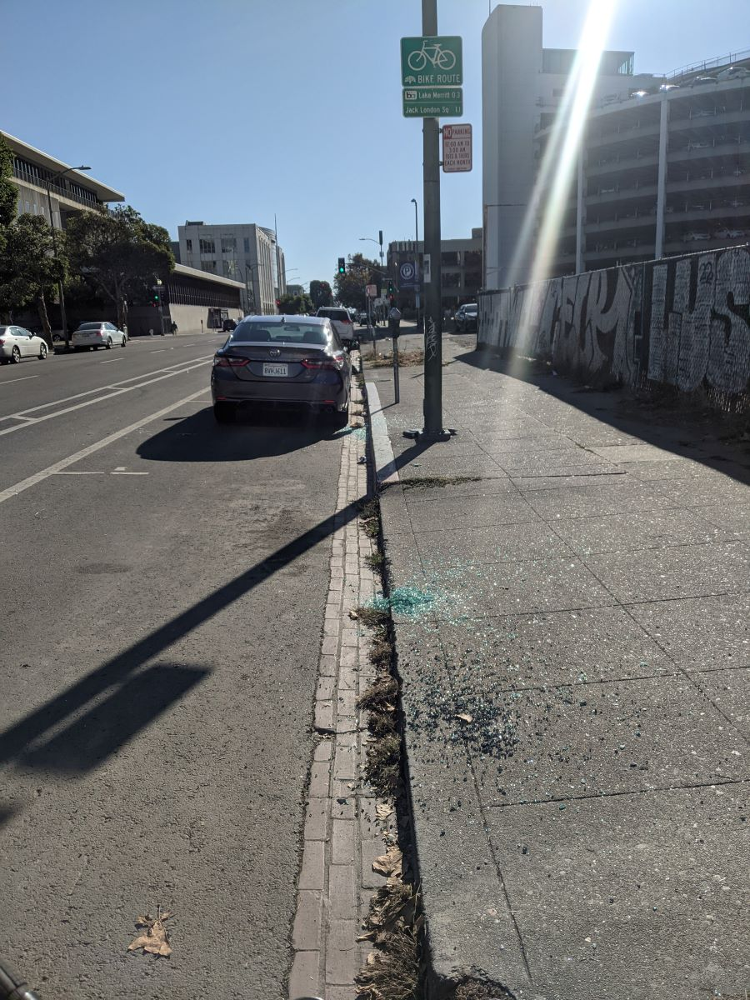
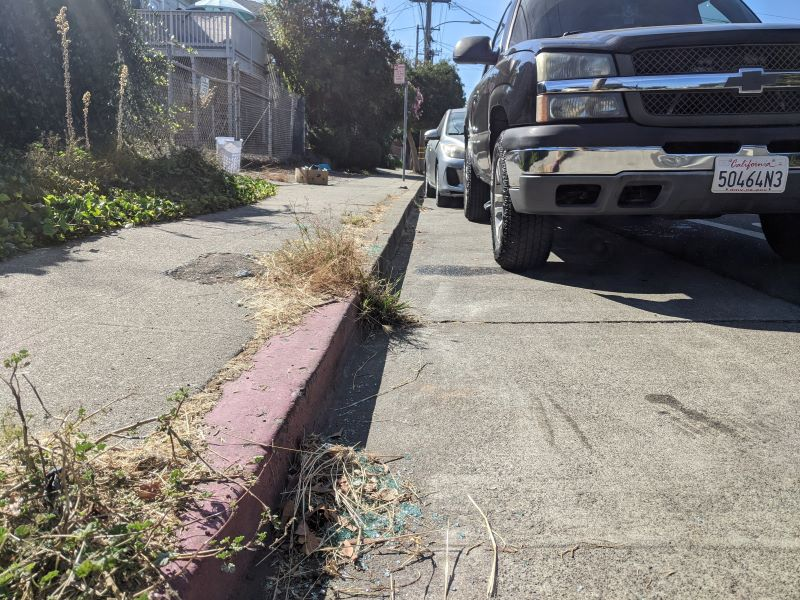

Shatter lamp infiniti
Oakland and SF's finest glass. Carefully escorted from our filthy streets and into your home.
version no. 5
These fine, clear, exceptionally large chunks were found scattered in front of 817 51st st last year. Collectors have been clamoring for them ever since. Not sure what it's from. Doesn't look like car glass.
I find small blue chunks like this all over town, usually from side windows. I only take em home if they're in a nice, fresh pile. I feel bad for folks who get a window smashed, but I hope we can make something nice out of the situation with this lamp.
Possible photo of the source? We'll never know. Outside Oakland Main Library.
Such a nice, clean pile. No sticks, no stems. It's like there's glass-scatting deer roaming the city.
This Infiniti was brashly stolen in the dead of night and then ditched in Richmond, CA. Thankfully, Creedence tapes were recovered from the car. I manged to get out there in time and grab some glass.
I was going to play volleyball at the beach but then I saw that a human tornado had decimated this poor b-stop and I had to grab some glass. It's laminated so to get it in chunks you have to use a heat gun and melt the laminate. I always travel with grocery bags since you never know when you might hit the jackpot and need to tote your treasure.
Window glass is often called tempered glass, or safety glass, since it breaks into chunks. These chunks are not sharp and refract light like a gem. The light refraction surprises our eyeballs which causes confusion, bewilderment, disbelief, awe, and eventually appreciation. We call this "eyball buzz" in the lighting business.
I don't know. My hope is that we can transform an act of destruction, rage, desperation into a work of art and clean a little broken glass from the street while we're at it.
I bike everywhere and am always trying to avoid glass so I don't get flat tires. Glass is the most dangerous and prettiest trash on the road, and I love that juxtaposition. I think it's cool that on the road it's a shiny nuisance but in a jar it's glorious and even useful.
I've had success with this lightbulb. I think you can use any LED bulb that's size E12. Incandescent bulbs would be too hot for the glue inside the jar. It would be cool to experiment with candlelight-esque flicker LED bulbs and wifi controlled colorful bulbs, but haven't tried that.
Unscrew the jar from the base. Pull the cord and bulb out of the jar. Replace bulb.